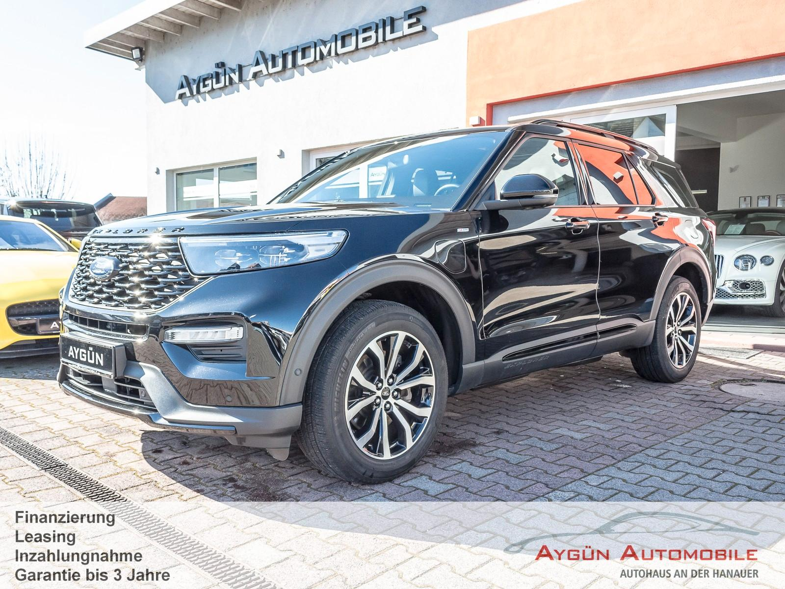
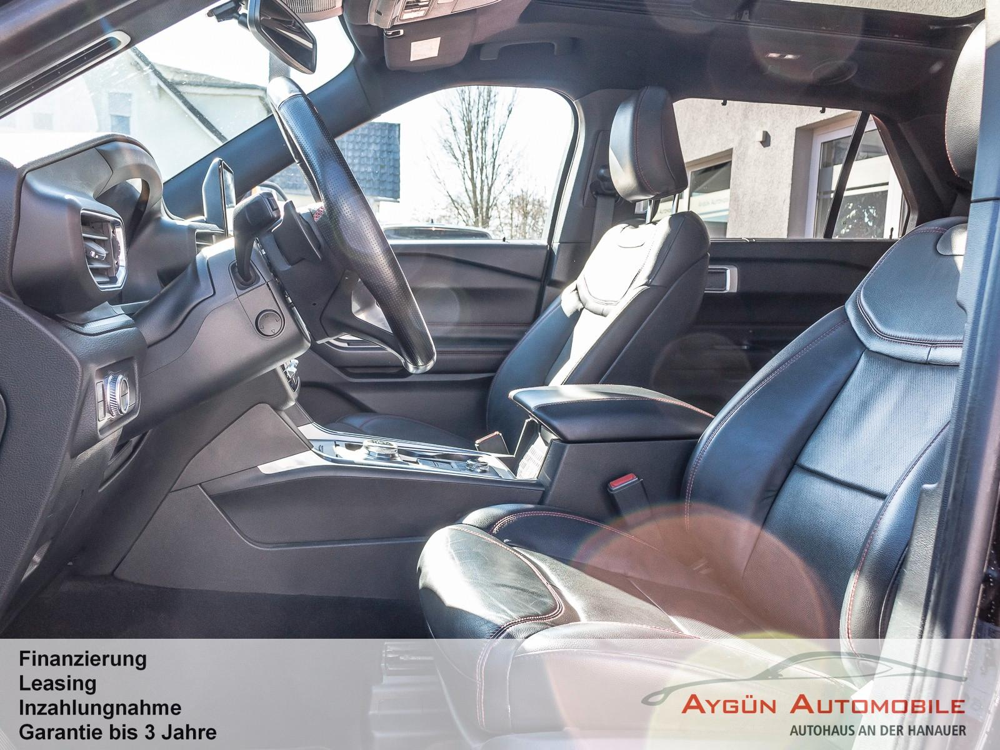
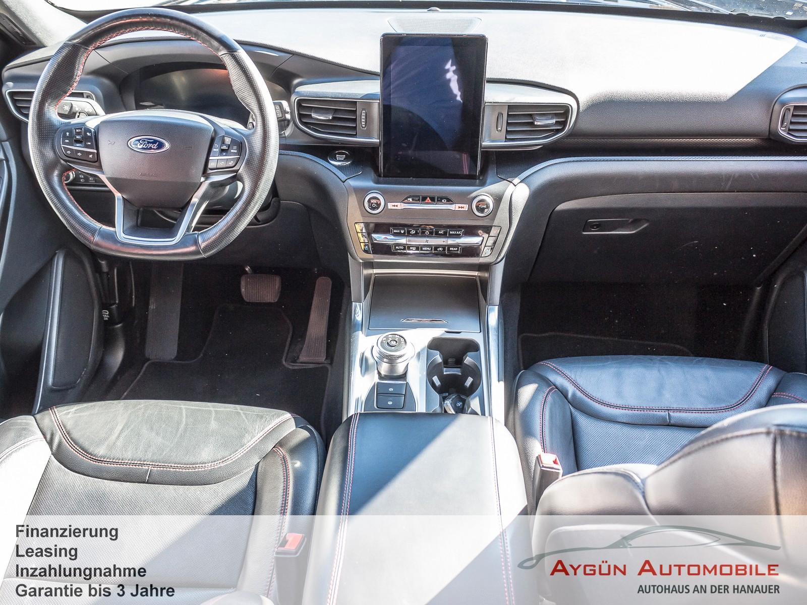
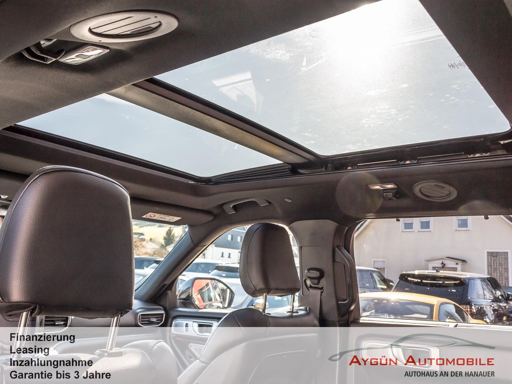
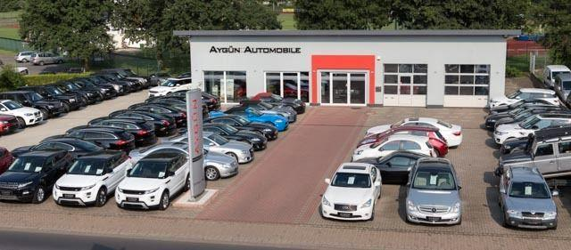

Ford Explorer ST-Line Plug-in-Hybrid 4x4
43995 PLN
Schlüchtern
59.995 km
Ausstattung:
- 360-Grad-Kamera mit "Split View"-Technologie
- Allradantrieb
- Ambientebeleuchtung
- Anhängevorrichtungs-Vorbereitungs-Set
- Auspuffanlage mit vier Endrohren aus poliertem Edelstahl
- Außenspiegel in Kontrastfarbe Schwarz glänzend
- Außenspiegel, elektrisch einstellbar, beheizbar, anklappbar mit integrierten Blinkleuchten und mit Umfeldbeleuchtung
- Toter-Winkel-Assistent inkl. Cross Traffic Alert und Memory-Funktion Ausweichassistent
- glanzgedreht Dachreling, schwarz
- Diebstahl-Alarmanlage
- Digitale Instrumententafel 12,3 Zoll
- Einstiegszierleisten vorn - mit "ST-Line"-Schriftzug
- Fahrspur-Assistent inkl. Fahrspurhalte-Assistent und Müdigkeitswarner
- Intelligente Geschwindigkeitsregelanlage, adaptiv (iACC - Intelligent Adaptive Cruise Control)
- Frontscheibe beheizbar
- Getriebe: 10-Gang-Automatik - Electronic Shifter, Drehschalter für Automatikgetriebe
- Handschuhfach, beleuchtet
- Heckklappe elektrisch, sensorgesteuert (Öffnen per Fußbewegung)
- Heckklappe mit Applikationen in Schwarz glänzend
- Heckscheibe beheizbar
- Heckscheibenwischer
- Heckspoiler in Wagenfarbe lackiert
- Induktive Ladestation für mobile Endgeräte
- Innenspiegel, automatisch abblendend
- Intelligenter Geschwindigkeitsbegrenzer mit Tempolimit-Anzeige
- Intelligentes Sicherheits-System (IPS Intelligent Protection System)
- 2-Zonen-Klimaautomatik
- Kopfstützen vorn (2) 4-fach einstellbar
- Ladekabel für Haushaltssteckdose
- LED Rückleuchten
- LED-Nebelscheinwerfer
- LED-Scheinwerfer mit Fernlicht-Assistent und LED-Tagfahrlicht
- Lenkrad: Multifunktions-Lederlenkrad, beheizbar im ST-Line-Design
- Lenksäule, in Höhe- und Reichweite elektrisch einstellbar
- MyKey-Schlüsselsystem individuell programmierbarer Zweitschlüssel
- Navigationssystem: Ford Navigationssystem inkl. Ford SYNC 3
- AppLink - 8"-Touchscreen (20,3cm Bildschirmdiagonale)
- Radioempfang DAB/DAB+ (Digital Audio Broadcasting)
- Panorama-Schiebedach, elektrisch mit Solar-Reflect-Wärmeschutz inkl. elektrischer Sonnenblende
- Park-Assistent (Active Park Assist) - mit Ein- und Ausparkfunktion (Active Park Assist)
- inkl.Park-Pilot-System vorn und hinten
- Polster: Leder - Premium-Lederpolsterung in Schwarz mit perforierter Sitzmittelbahn und roten Ziernähten
- Radiozubehör: B&O Sound System - 780 Watt-Premium-Sound-System mit 12 Lautsprechern, einschließlich Subwoofer
- Scheinwerfer-Assistent mit Tag/Nacht-Sensor
- Sitze: 3. Sitzreihe elektrisch aus- und einfahrbar Sitze:
- Rücksitze der 2. Sitzreihe beheizbar Sitze: Sportsitze, 10-fach elektrisch einstellbar, klimatisiert und beheizbar
Unsere Öffnungszeiten:Montag – Freitag 9.00 – 13.00 Uhr und 14.00 – 18.00 UhrSamstags 9.00 – 13.00 UhrIrrtum und Zwischenverkauf vorbehalten!Wir sprechen Deutsch / Englisch / Türkisch !Unsere Email Adresse :info@ayguen-automobile.de
